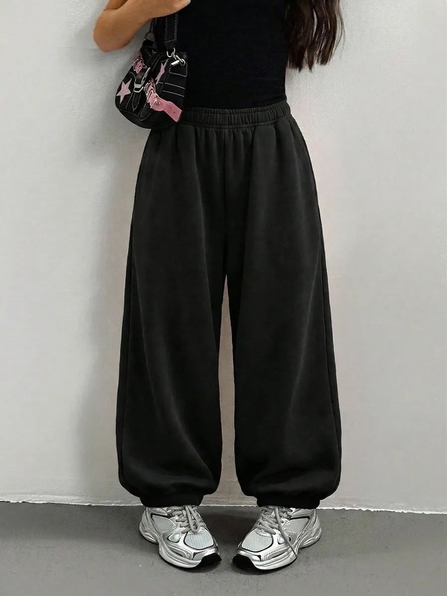
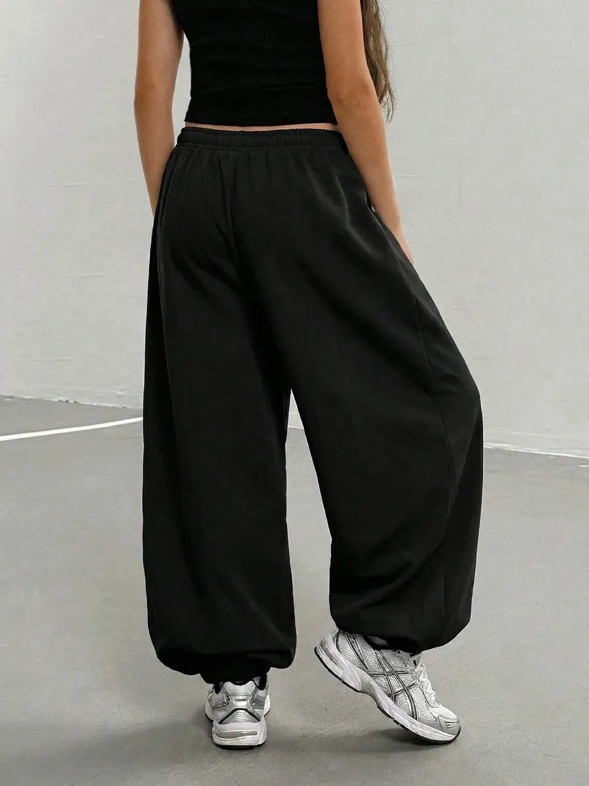
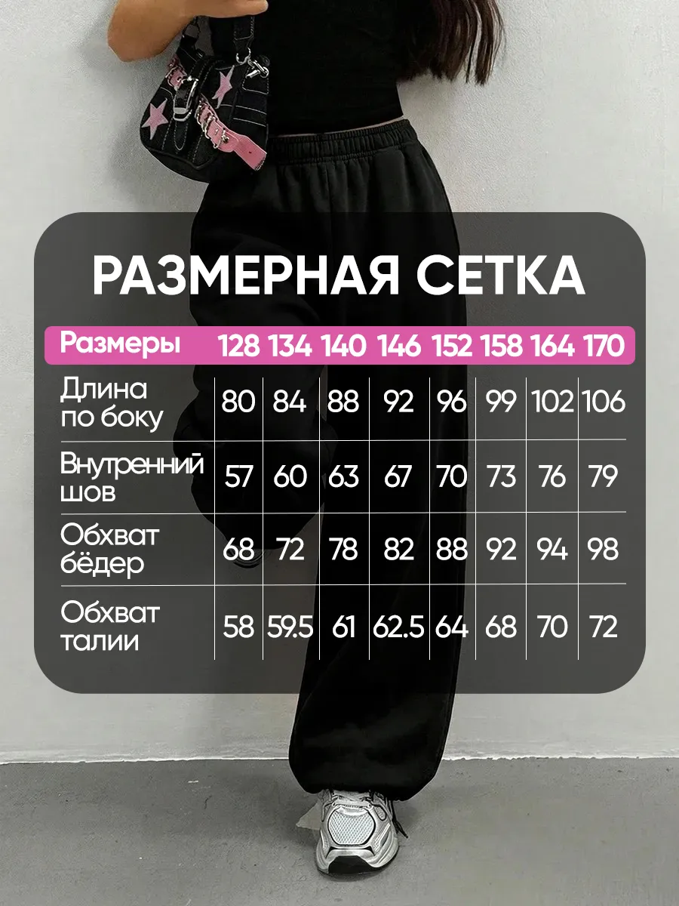
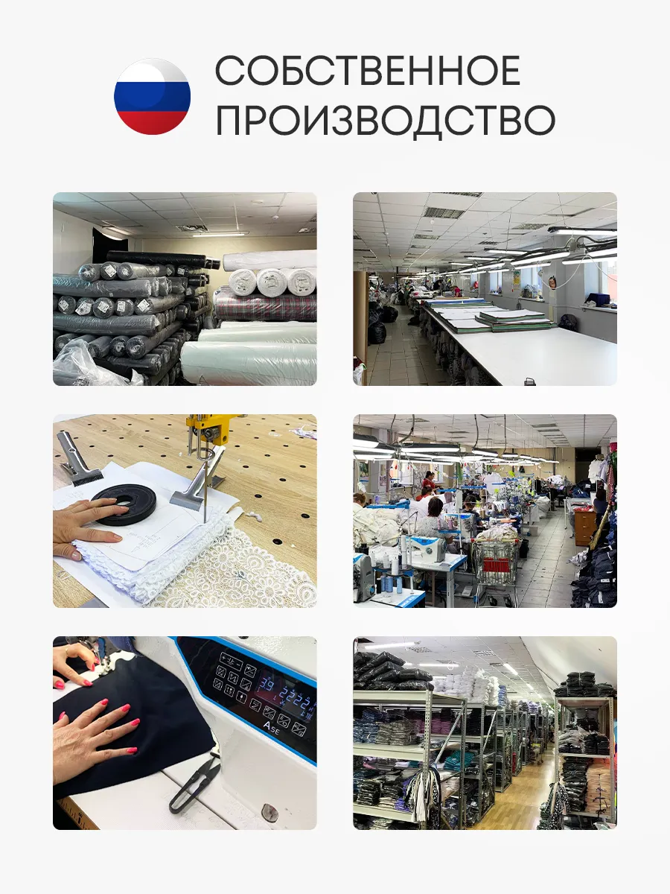
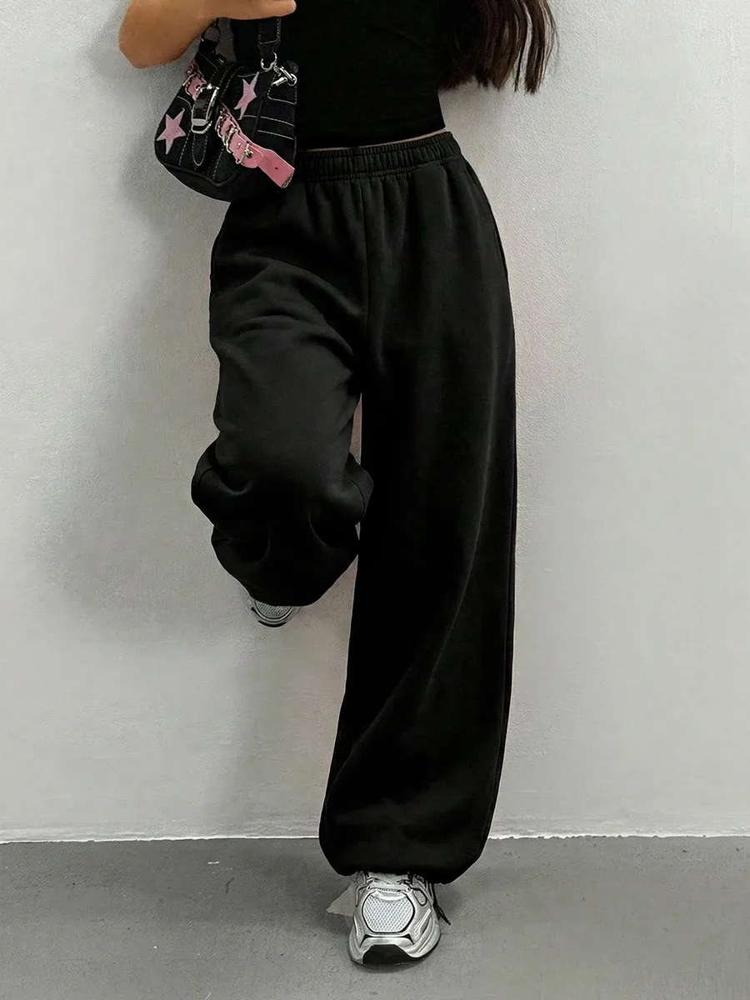

WB 555524976 · Спортивные штаны джоггеры оверсайз
Прогон остановлен на фото №2: ошибка GigaChat при второй проверке. Автоматических повторов нет. Фото №3–11 не отправлялись.
| Результат | Количество | Фото |
|---|
| Рекомендую | 0 | — |
| Допустим | 0 | — |
| Не рекомендую | 1 | 1 |
| Ошибка анализа | 1 | 2 |
| Не проверены | 9 | 3–11 |
№1: первая проверка отметила флаг collage из-за пиксельного изображения девушки рядом с товарным фото. Это вердикт модели; владелец разметку этой карточки ещё не подтверждал. Отказ по рисованной вставке требует отдельной редакционной оценки.
Для №2 первая оценка получена, но обязательная вторая проверка завершилась ResponseError. Положительный вердикт не выдан. HTTP-статус и тело ошибки в этом диагностическом runner не сохранены; точная причина ответа сервиса не установлена.
Фото №1 · Не рекомендую

- Несколько ракурсов в одном изображении: выберите отдельное фото товара.
На белом фоне девушка стоит в черных спортивных штанах джоггерах оверсайз, черной футболке и белых кроссовках. Рядом находится пиксельное изображение девушки в похожем стиле одежды.
Фото №2 · Ошибка анализа

Фото №3 · Не проверено

Фото №4 · Не проверено

Фото №5 · Не проверено

Фото №6 · Не проверено

Фото №7 · Не проверено

Фото №8 · Не проверено

Фото №9 · Не проверено

Фото №10 · Не проверено

Фото №11 · Не проверено

Версии: image-review-v13-trouser-evidence · owner-rules-2026-11-13-v8-trouser-evidence. Правила, модель и код продукта не менялись. Полного результата или общей точности по этой карточке нет.